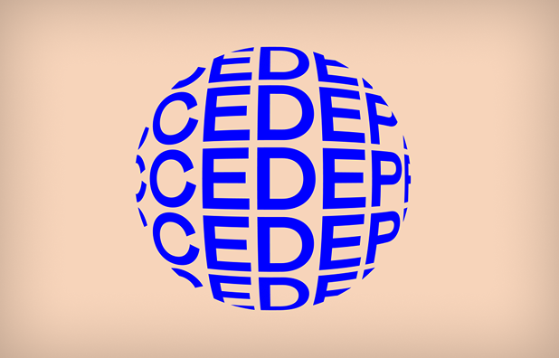
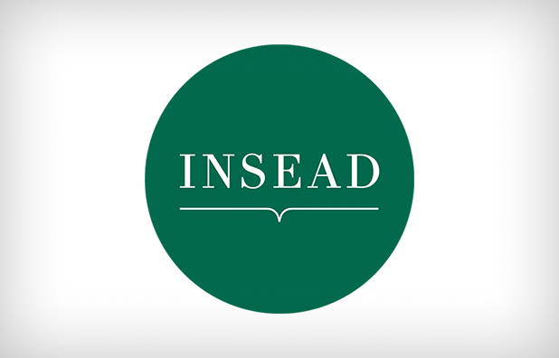
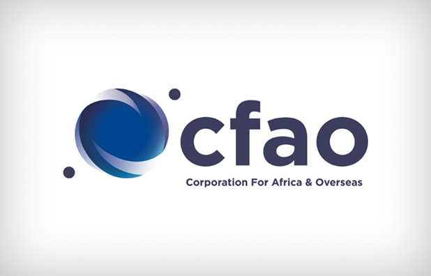
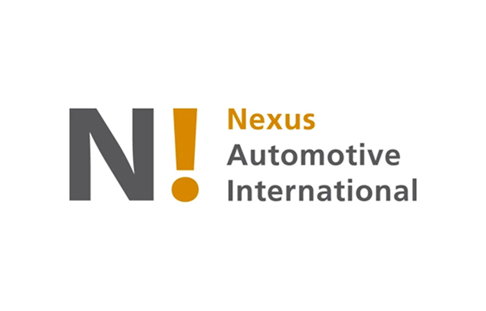
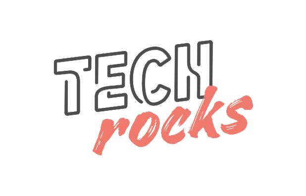
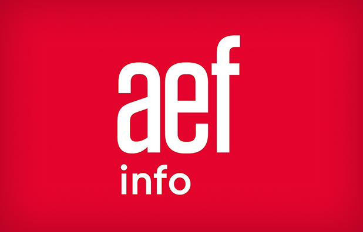

Connecter les idees,
inspirer le futur
Connected Mate est un ecosysteme complet : services IA en marque blanche, keynotes sur l'innovation et l'IA, podcasts avec les esprits les plus brillants, et applications privacy-first pour booster votre productivite.
Ils nous ont fait confiance — conferences, conseil, applications






En chiffres
L'impact Connected Mate
Explorer
Tout l'univers Connected Mate
Keynotes
Innovation, IA et transformation digitale. Des conferences qui inspirent et provoquent le changement dans les organisations.
Podcasts
Des conversations profondes avec entrepreneurs, chercheurs et innovateurs. Plus de 100 episodes disponibles sur toutes les plateformes.
Applications
Des outils privacy-first propulses par l'IA locale. Dictee, transcription, prise de notes — tout reste sur votre appareil.
Blog
Reflexions sur l'IA, le futur du travail, la vie privee numerique et l'innovation. Des articles courts et actionables.
Communaute
Restons connectes
YouTube
Keynotes, demos et replays de conferences sur notre chaine YouTube.
Podcast
Ecoutez le podcast Connected Mate sur votre plateforme preferee via Ausha.
Spotify
Retrouvez tous les episodes du podcast sur Spotify. Suivez-nous pour ne rien manquer.
Contact
Envie de collaborer ?
Une question, une invitation pour une conference ou un partenariat ? Contactez-nous directement via WhatsApp ou par email.